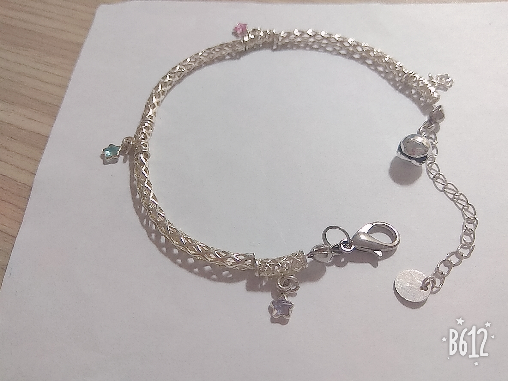
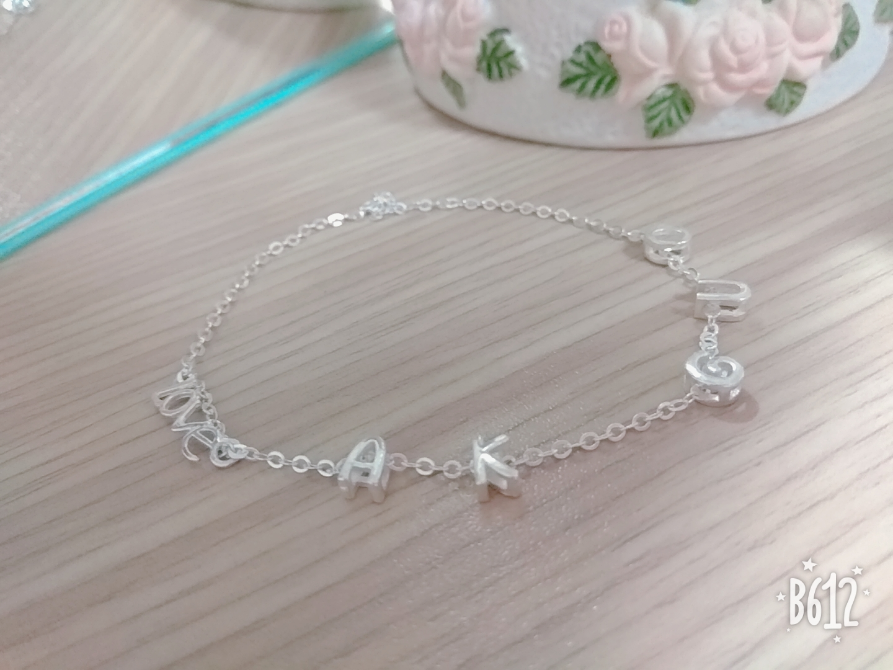
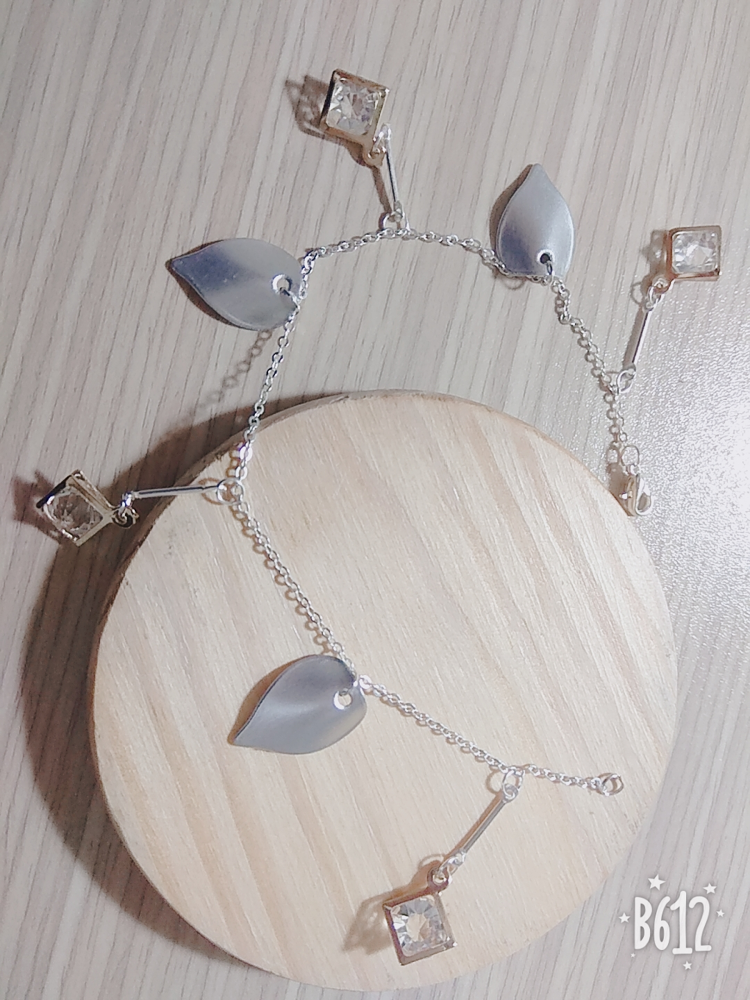
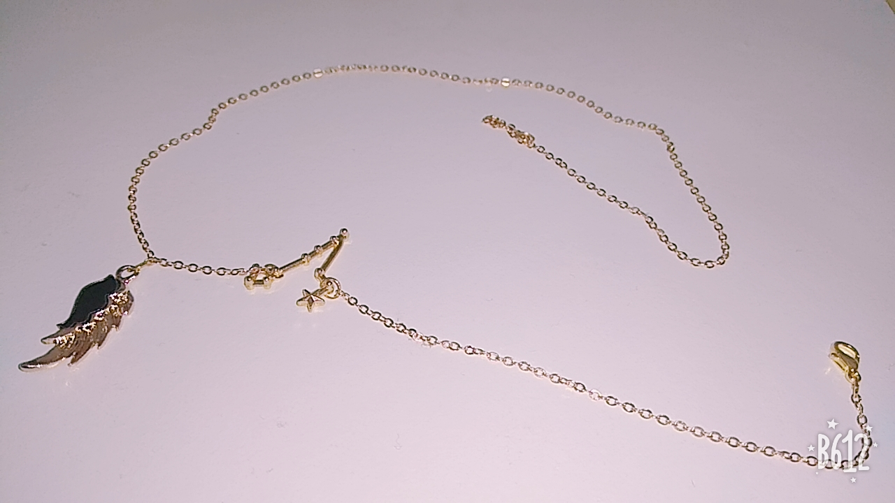
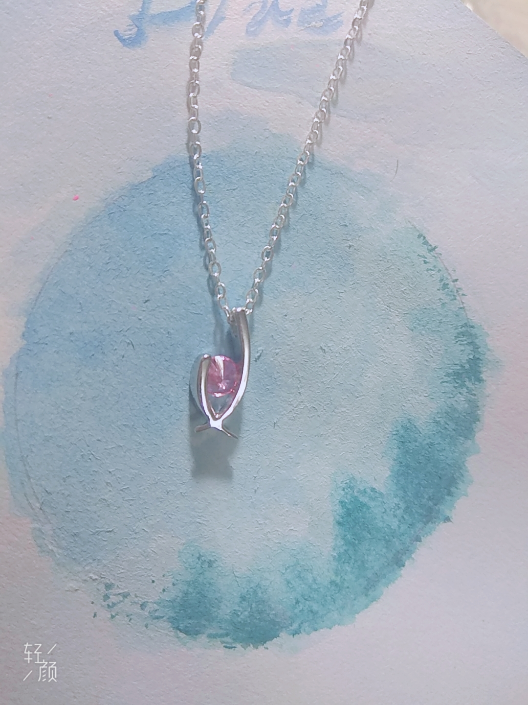
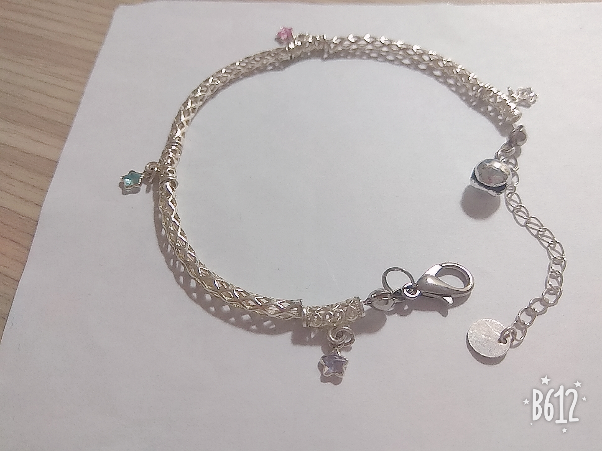
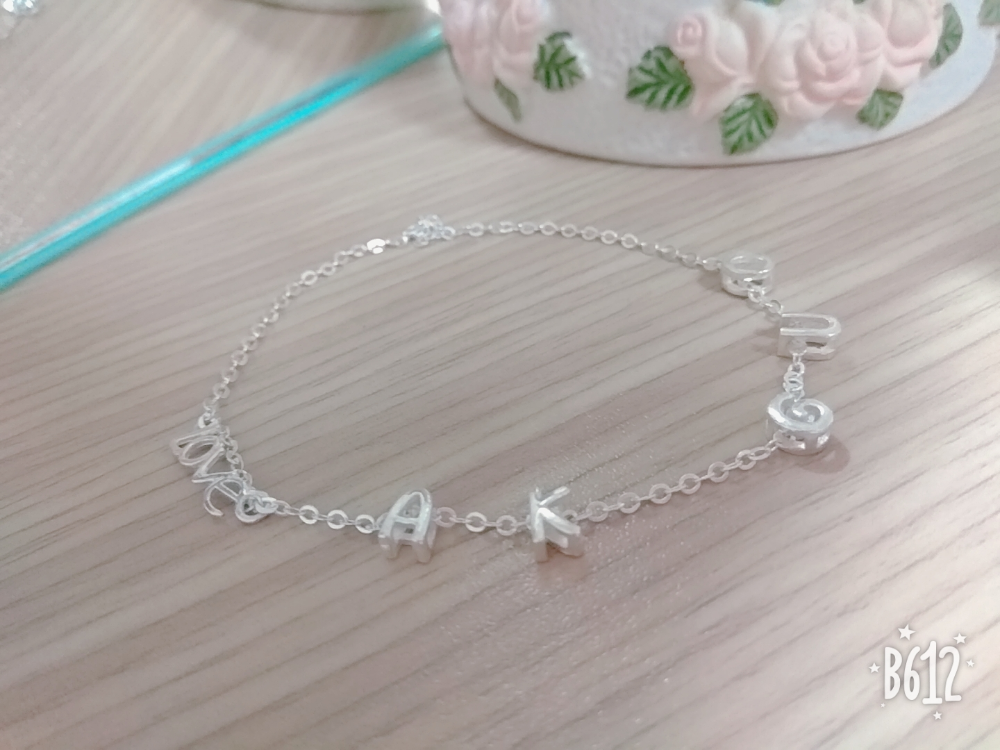
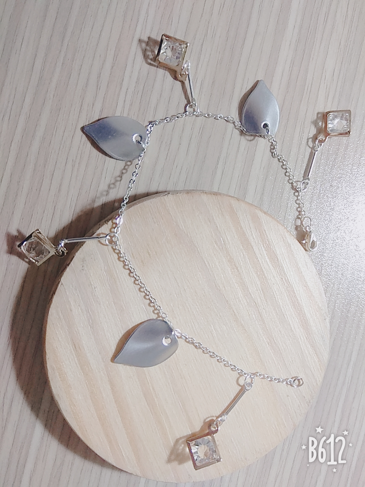
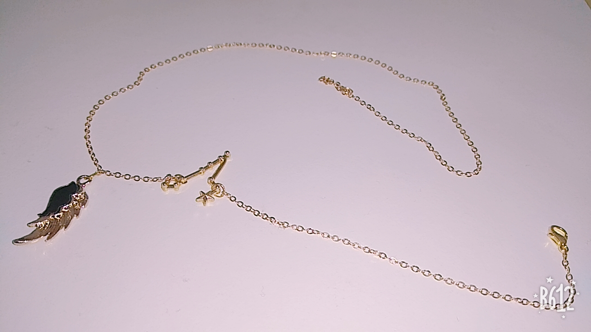
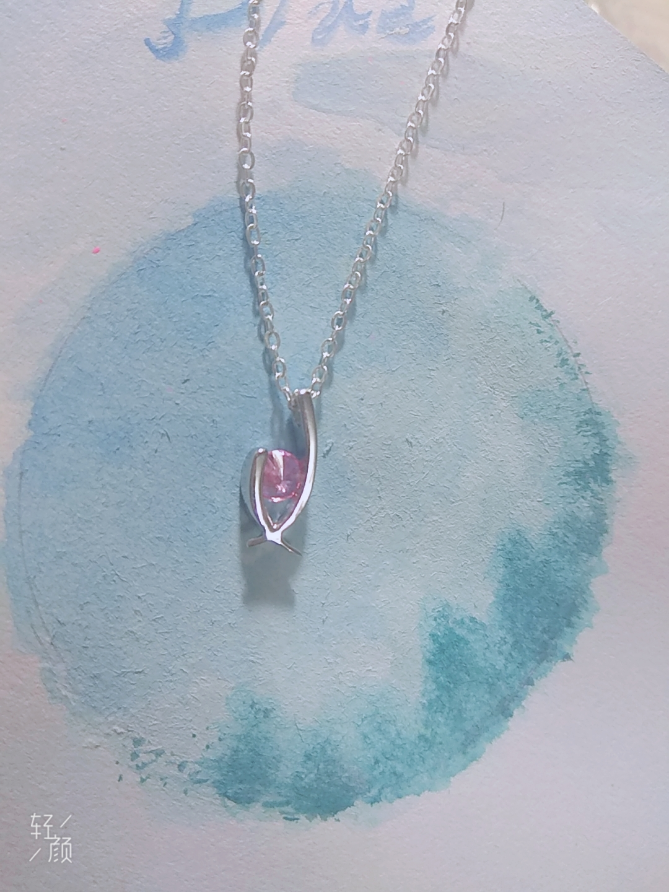

自我介紹
歹給賀! 我是洪翊瑄
我來自台南 畢業於台南二中 ~
現在就讀聯合大學店(x
很愛美食、動物等等
我喜歡自己手作飾品還有甜點!希望我能開一間自己的甜點店以及網路經營手作店!
如果開店希望大家多多支持!!!
___2020.11.09
歹給賀! 我是洪翊瑄
我來自台南 畢業於台南二中 ~
現在就讀聯合大學店(x
很愛美食、動物等等
我喜歡自己手作飾品還有甜點!希望我能開一間自己的甜點店以及網路經營手作店!
如果開店希望大家多多支持!!!
___2020.11.09
| 生日 | 90/11/1 |
|---|---|
| 星座 | 天蠍座 |
| 血型 | O型 |
| 現職 | 聯大文創系的菜鳥學生 |
| 學歷 | 國立臺南第二高級中學 |
| 專長 | 吃喝睡 |
| 興趣 | 畫畫 烘焙 遊戲 追劇 美食 梗圖 YT...很多很多 |
| 個性 | 怕生 忽冷忽熱 |
◆ 飾品
 









◆ 畫畫(僅存少部分 待更)
◆ (甜點照片不見了 待更)
~持續更新中~